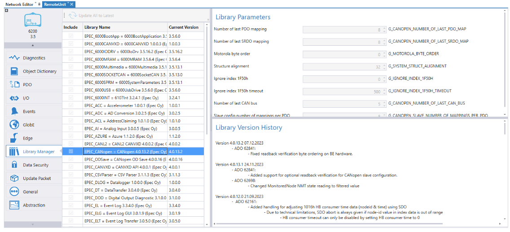
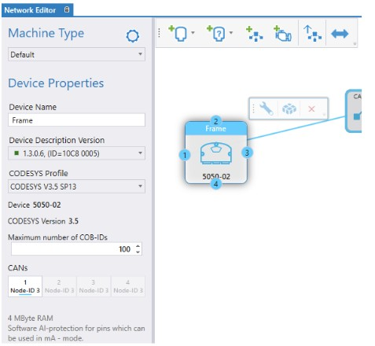
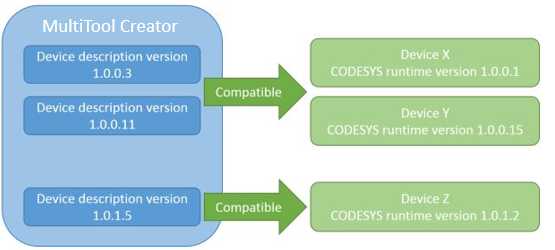
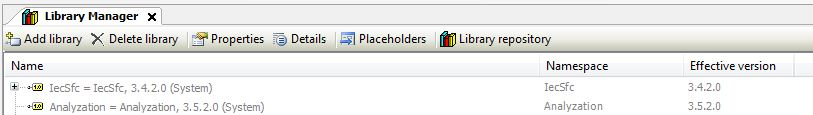

Library Manager
This topic describes library version handling in MultiTool Creator projects and in both CODESYS environments. MultiTool Creator Library Manager lists all PLCopen libraries and their versions for each device. The selected library's version history is shown on the right side of the window.

CODESYS 2.3
Since MultiTool Creator creates a CODESYS code template, all libraries related to the template are always included to the project and the selection cannot be removed from the Library Manager.
All additional libraries can be selected to be included in the project.
To select project libraries
-
Select the library versions or click Update All to Latest.
-
Leave the Include box unchecked if you do not want the library to be included in the project.
To update libraries into an existing CODESYS project, see Updating MultiTool Creator Configurations to CODESYS Project.
The Current Version column shows the library version. The column includes also a colored square that indicates if a new library version is available.
In case a new library version is available, the color is yellow. If the current version is the newest one, the color is green.
CODESYS 3.5
In CODESYS 3.5, the used libraries and their versions are defined in the device description. The libraries are automatically included to the project according to the device description.
In case the library version(s) need to be changed, there is two ways to do it:
-
Changing the device description version from the Device Properties. To change the device description version, select the device and the Device Properties are shown on the left side.

Device description selection box includes a colored square that indicates if a new device description version is available.
In case a new device description version is available, the color is yellow. If the current version is the newest one, the color is green.
Note that the device description version has to be compatible with the device's CODESYS 3.5 runtime version. Otherwise, CODESYS 3.5 gives an error before downloading the application to the device ("The selected target system is different from the connected device. Version mismatch..."). Downloading is possible when the versions are correct. Both the device description and the CODESYS 3.5 runtime version consists of four digits. To be compatible with each other,
-
|
Device description and CODESYS runtime versions
|
Compatible
|
|
Device description file 1.0.1.x
CODESYS runtime 1.0.1.y
|
YES
|
|
Device description file 1.0.1.n
CODESYS runtime 1.0.2.k
|
NO
|

|

|
In S series / E Series, the CODESYS runtime version number is according to 3S version numbering and should not be confused with the S series / E Series firmware binary's version. Device description version (e.g. 3.5.10.0) corresponds with the 3S CODESYS runtime version.
|
-
Change the library version to a placeholder used in CODESYS 3.5
|
|
It is not recommended to change library versions directly in the project because it can cause errors due to incompatibility between library versions.
|
|
|
If a placeholder value is redirected via CODESYS 3.5 Library Manager, MultiTool Creator import doesn't change it's value even device description version is changed. To release the redirection you must reset the placeholder to the default value.
|
A placeholder in CODESYS 3.5 refers to a definite library version. To change the used library version directly in CODESYS 3.5 project:
-
-

Epec Oy reserves all rights for improvements without prior notice.
Source file Library_Manager.htm
Last updated 25-Jun-2025